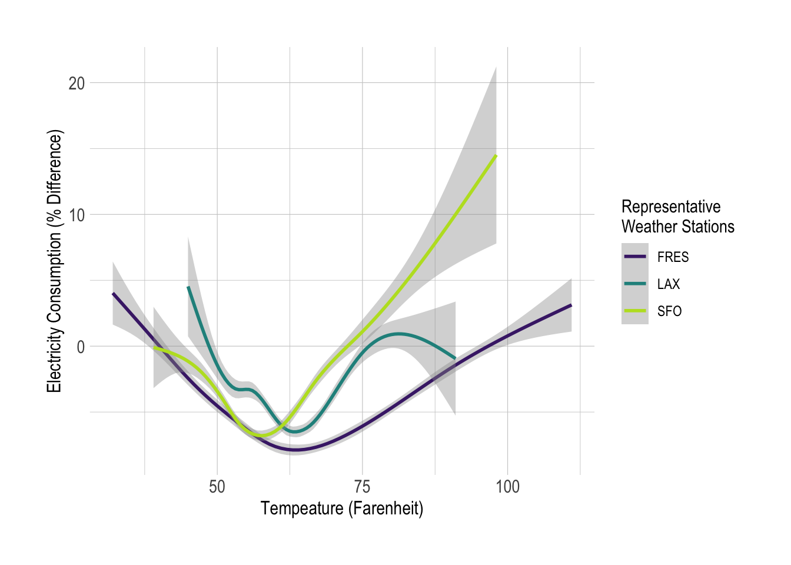
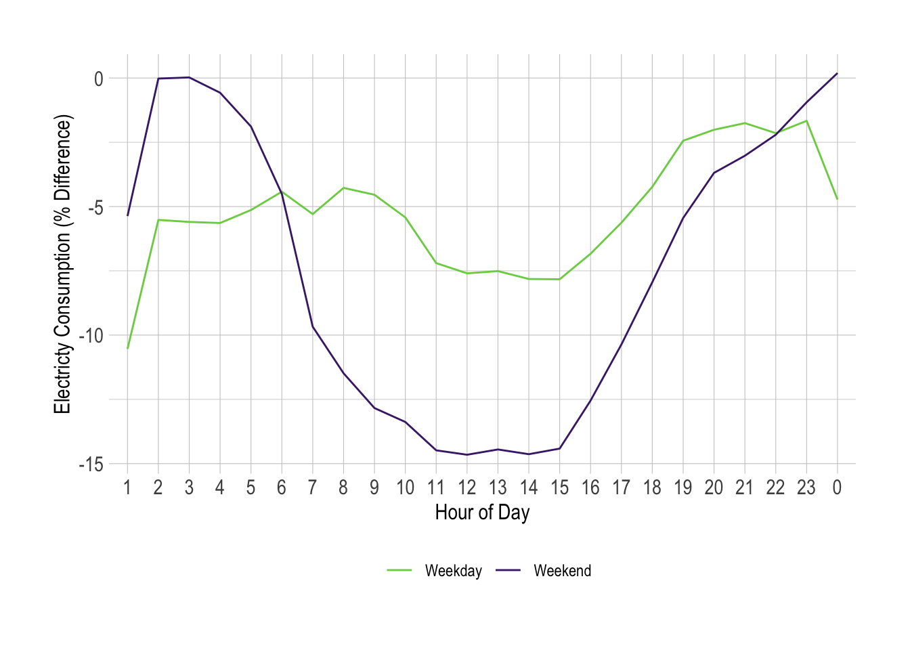

This is the deep dive into COVID-19 impacts on aggregate energy supply and demand in California. I have defined the start of COVID-19 impacts as March 18th, 2020. The Bay area shelter-in-place declaration was announced on March 16th, and the statewide shelter-in-place was officially announced March 19th.
This figure helps demonstrate how sensitive the changes in demand are as a result of temperature. This figure is a subset of the weather data used to demonstrate this behavior. Temperature sensitivity across the IOU regions is forthcoming.

This figure is generated by taking the differences of observed demand from the weather normalized predicted demand, and generating a percent difference for weekdays and weekends.

This demonstrates the differences in the day-ahead demand forecast minus the actual demand pre- and post-COVID, and on weekdays and weekends.
Forthcoming
This is a plot of the 2007, 2009, and 2019 IEPR projections from the SCE service territory. This is used to demonstrate the effect of a recession on realized demand versus projected demand prior to and during the recession of 2007-2009. SCE data was used due to data availability.
Two points to note, (1) demand fell and didn’t recover post-recession (called an L-shaped recession), and (2) it led to the differences between 2007 forecasts and true demand to be around 10%.
The goal is to generate weather normalized estimates of electricity demand without the impacts of COVID-19. The effect of COVID is two-fold, (1) the shelter-in-place, and (2) the effect of the slowing economy.
Data is hourly, and spans 2016 to the present. The weather data is comes from major airports throughout California.
The main model uses a machine learning technique called a cross-validated LASSO, and the model is run on the equation \[\text{Load}_{it} = \text{Solar Generation}_{it} + \text{Weather}_{it}\times \text{HoD}\times\text{DoW}\times\text{MoY} + \varepsilon_{it}\] Load and solar generation is measured either at the state-level, or by TAC. Solar generation is utility scale solar, and is used as a surrogate variable to control for rooftop solar production. To control for hourly, weekly, and seasonal controls, I interact the weather data with the hour-of-the-day (HoD), day-of-the-week (DoW), and month-of-the-year (MoY). This allows for there to be different interacting signitures with the weather data, and picks up variation that leads to the daily peak demand, for example.
The cross-validated LASSO is a technique that designed for prediction, and the nature of the LASSO with the training and testing regime of cross-validation only chooses elements of the model that lead to the least prediction error.
A product of CalCCA - 2020 - not for commercial purposes.